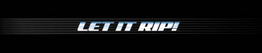

<!-- Go, go Content! -->

<div id="content">

<TABLE WIDTH=621 BORDER=0 CELLPADDING=0 CELLSPACING=0><TR><TD COLSPAN=3></TD></TR><TR><TD ROWSPAN=2 WIDTH=51 background="images/spin_champs_bg_left.gif" valign="bottom"></TD><TD WIDTH=493 bgcolor="#000000" valign="top" align="center">

<!--- content GO! --->
<table width="400"><tr><td>
<br><br>

<div align="left">
<br>
<ol>
<li>Todos los participantes deber�n tener de 4 a 14 a�os de edad.</li>
<li>La competencia iniciar� en el horarrio establecido y con un m�nimo de 16 participantes.</li>
<li>Los art�culos, y sus partes, utilizados para competir en el Torneo deber�n ser productos originales Hasbro: Beyblade, Beyestadios, lanzadores estandar, de lujo y electr�nicos.</li>
<li>Para competir en el torneo cada jugador deber� presentar 3 Beyblade originales de Hasbro diferentes. No se permitir� el uso de Beyblade (o componentes del mismo) piratas o ilegales. Si un Beyblade ha sido combinado deber� avisar al arbitro para la autorizaci�n para lanzarlo durante alguna de las batallas.</li>
<li>El jugador que gane 2 de 3 batallas ser� el ganador de la partida.</li>
<li>Una partida incluye 3 batallas.</li>
<li>La competencia se llevar� a cabo en varias partidas, de acuerdo al n�mero de jugadores, donde el ganador de cada partida pasar� a la siguiente ronda.</li>
<li>Una batalla es una competencia entre dos participantes al lanzar sus respectivos Beyblades dentro del Beyestadio.</li>
<li>Todas las batallas Beyblade se llevar�n a cabo dentro de Beyestadios. Los Beyestadios no podr�n ser colocados sobre mesas o superficies elevadas.  </li>
<li>Los Beyblade deber�n ser lanzados en batallas oficiales despu�s de escuchar la se�al: 3,2,1 LET IT RIP! </li>
<li>Solo un lanzamiento por batalla es permitido - La batalla finaliza cuando uno de los Beyblade deja de girar. El Beyblade que se mantenga girando mayor tiempo ser� el ganador.</li>
<li>El jugador que gane 2 de 3 batallas ganar� la partida y podr� participar en la siguiente ronda.</li>
<li>Si un jugador toca al oponente durante el lanzamiento, perdar� la batalla. </li>
<li>Si un jugador lanza el Beyblade fuera del Beyestadio, se repetir� la batalla.</li>
<li>Si un jugador toca el Beyestadio durante la batalla, se dar� por terminada en ese momento y su oponente pasar� a la siguiente ronda.</li>
<li>Los Beyblade deber�n ser lanzados al mismo tiempo. Si el �rbitro determina que los Beyblade fueron lanzados en momentos diferentes se repetir� la batalla.</li>
<li>Si el �rbitro determina un empate cuando los Beyblade se detengan al mismo tiempo, la batalla se repetir�.</li>
<li>Si consecutivamente 3 batallas son consideras como empate, se llevar�n a cabo batallas adicionales hasta que una batalla sea ganada por uno de los participantes. El ganador de esa batalla ser� el ganador de la partida a�n cuando su opoenete hatya ganado la primera y/o segunda batalla.</li>
<li>Si los Beyblade no son lanzados al mismo tiempo la batalla se repetir�.</li>
<li>Si un Beyblade entra en las trampas del Beyestadio y contin�a girando por mayor tiempo que su oponente ser� declarado el ganador de esa batalla.</li>
<li>Si en cualquier momento durante una batalla un Beyblade es lanzado fuera del Beyestadio ser� descalificado y su oponente autom�ticamente ser� declarado el ganador de esa batalla.</li>
<li>Los Beyblade electr�nicos y de control remoto (radio control) fabricados por Hasbro no est�n permitidos en el torneo.</li>
<li>Todos los Beyblade deber�n estar armados por completo y listos para competir. No les ser� permitido a los participantes reconfigurar  sus Beyblade durante la partida.</li>
<li>Si un Beyblade se desarma durante la batalla , el oponente ganar� la batalla.</li>
<li>Cualquier participante que viole este reglamente y/o se comporte de una manera antideportiva ser� expulsado del torneo.</li>
<li>Est� prohibido, en todo momento, lanzar a prop�sito un Beyblade a una persona.</li>
<li>El uso de componentes de Beyblade modificados o rotos est� prohibido. Si alguna de las partes est� rota, desgastada o modificada deber� ser reemplazada de inmediato.</li>
<li>Estas reglas son sujetas a cambios sin previo aviso.</li>
<li>Todas las decisiones de los arbitros son definitivas.</li><br><br>
REGLA ADICIONAL PARA LA GRAN FINAL<br>
<li>Si un participante no se presenta al inicio de la batalla, auom�ticamente perder� por ausencia.</li>
</ol>
</div>

<div align="left">
<br>
<ol>
<li>All competitors must be 4 to 14 years old.</li>
<li>The competition will begin at the time schedule with at  least 16 players.</li>
<li>The items used in to compete in the Tournament must be  official Hasbro Beyblade Products: Tops, Beystadiums, launchers and ripcords.</li>
<li>To compete in the tournament every player must present 3 different Beyblade Tops. Illegal Beyblade or components are not allowed in the Tournament. if a Beyblade has been combined, competitor shall notify to the referee for approval to launch it in one of the battles..</li>
<li>The player who wins two of three battles will be the winner of a round.</li>
<li>A Round consist of  3 battles</li>
<li>Competence will be held in different round, according to number of players, and the winner of the round will pass to next stage.</li>
<li>A Battle will consist of 2 competitors launching their tops into Beystadium.</li>
<li>All BEYBLADE battles must occur in BEYSTADIUM! -- BEYSTADIUM cannot be on table or other elevated surfaces  </li>
<li>To begin official BEYBLADE battles, BEYBLADE tops must be launched after the signal of 3,2,1 LET IT RIP! </li>
<li>Only one launch per battle is allowed -- battle ends when one top stops spinning. The Beyblade which spins longer will win the battle.</li>
<li>The player who wins 2 of 3 Battles (2 points) will win the round and will be able to participate in the next round.</li>
<li>If player touches opponent during opponent's launch of top, player loses the battle </li>
<li>If one of the players does not launch top into the BEYSTADIUM, the battle will be repeated.</li>
<li>If player touches BEYSTADIUM during battle, the battle immediately over and opponent will pass to next round.
<li>The tops must be launched at the same time. If the referee declares the Tops were launched at different time the battle will be repeated.</li>
<li>If the referee declares a 'Tie', when both Beyblade battling stops at the same time, the battle will be repeated.</li>
<li>If  3 consecutive Battles are considered Tie, additional battles will be played until a Battle is won. The winner of that battle will be declared the winner of that round, even if he lost the first and /or second battle.</li>
<li>If the Beyblades are not launched at the same time the battle will be repeated.</li>
<li>If a top enters a side pocket in the Beystadium and continues to spin longer than the opponent's top, it will be declared the winner.</li>
<li>If at any time during the battle a top launches outside Beystadium, it is disqualified and the opponent will automatically be declared the winner of that battle.</li>
<li>Hasbro manufactured 'Electronic and RC Tops' are not allowed for Official BBA Tournament Play.</li>
<li>All tops must be assembled and ready for battle once competitors enter the tournament area. Competitors are not allowed to reconfigure their tops during the round.</li>
<li>If a Beyblade is disassembled during Battle, the opponent will win that battle.</li>
<li>Any competitor that violates this regulations and / or performs in an unsportsmanlike manner will be ejected from the tournament.</li>
<li>It is prohibited to purposely launch a Beyblade at a person at any time.</li>
<li>The use of modified or broken Beyblade parts is prohibited. If some parts are broken, worn-out  or purposely modified they must be replaced immediately.</li>
<li>Rules are subject to change without notice.</li>
<li>All decisions of the 'REFEREES' are final.</li><br><br>
ADITIONAL RULES FOR THE FINAL CONTEST:</li>
<li>If a competitor is not present at the beginning of the battle, their opponent will automatically win by default.</li><BR>
</ol></div>
<BR><BR>
</td></tr></table>

<!--- conten NO! --->
		</TD>
		<TD WIDTH=77 background="../BK_spin_champs/images/spin_champs_bg_right.gif" valign="top"></TD>
	</TR>
	<TR>
		<TD HEIGHT=48 valign="bottom"></TD>
		
</TABLE>


</div>
<!-- No, no Content! -->
